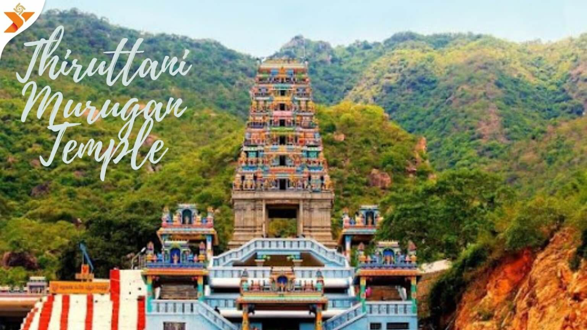

LORD MURUGA TEMPLE
LORD MURUGA TEMPLE

The temple hosts a Padyabhoojai festival, which was started during the British Raj in 1917.
The Murugan Temple in Tamil Nadu, India has a rich history that's intertwined with the legends of Lord Murugan,
the Hindu god of war and victory.
Some say the temple was built by the Pallava kings in the 9th–10th century CE and later renovated by the Cholas.
The temple is also mentioned in the Sangam period work Tirumurugatruppadai by Nakkeerar.
The temple is known for having an elephant as the original animal mount of Lord Murugan,
rather than the more common peacock. The temple also has a hollow chest,
which is said to be a result of the demon Tarakasuran throwing a discus on it.